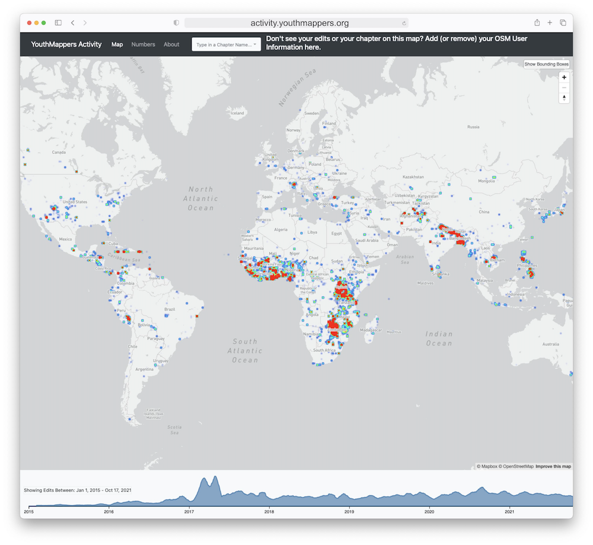
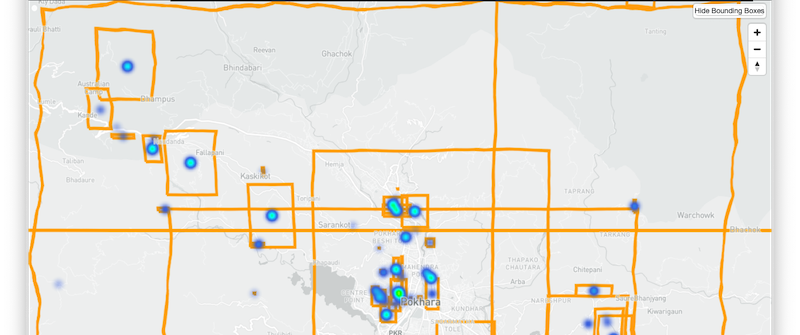
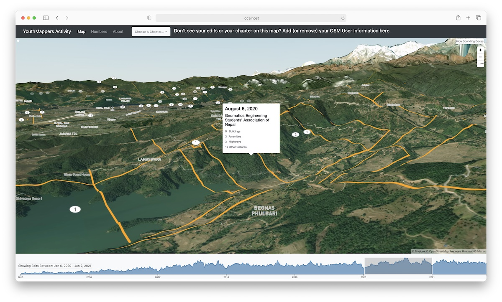
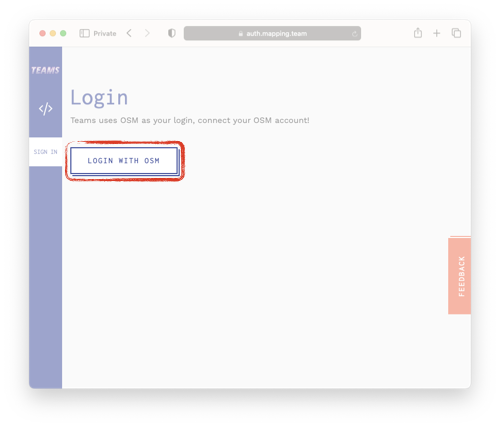
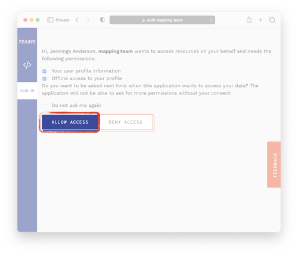

YouthMappers Activity Tracker
This dashboard quantifies the OpenStreetMap editing activity by mappers associated with YouthMappers chapters around the globe. There are over 400 chapters in more than 75 countries around the world. This dashboard shows edits from thousands of mappers in these chapters.
Don't see your edits or your chapter?
We can only track edits by mappers that are registered or listed in an official YouthMappers chapter on OSM Teams. Please see the instructions to join your chapter on OSM Teams!
Using The Map

Filtering by Time
The timeline along the bottom shows the relative number of chapters active each day in OSM. By clicking and dragging across the timeline, the map will filter to only show changesets submitted in that time range.
Changeset Information
Click Show Bounding Boxes to show the bounding box of changesets performed that day. The bounding boxes appear unstraight because they can also be viewed in 3d!
Tilt the map with Control + Click & Drag to see the actual terrain. The numbers inside the bounding boxes represent the number of features edited in that box on any given day. Hovering over this number will give more information.

Filtering by Chapter
Choosing a chapter from the Dropdown menu labeled Choose A Chapter will show only edits from mappers associated with that chapter. Multiple chapters can be chosen consecutively. Chapters can be unselected by clicking the[X] button next to their name.
How are these numbers calculated?
Did you know that the entire editing history of OpenStreetMap is available in a queryable database part of Amazon's Open Data Program? We search the full history to count all of the edits to highways, buildings, amenities, or other objects by OSM users known to be in, or have been part of a YouthMappers chapter.
The numbers presented here are just a subset of all edits from YouthMappers chapters because there many mappers associated with YouthMappers chapters that are not yet registered on OSM Teams. If you are part of a YouthMappers chapter and not registered on OSM Teams, please see the instructions to join your chapter on OSM Teams!

OSM Teams
OSM Teams is a platform that allows OpenStreetMap users to organize themselves into teams. This allows more convenient tracking of membership among groups of mappers, which enables easier collection of mapping metrics and statistics.
YouthMappers on OSM Teams
The YouthMappers Organization on OSM Teams consists of more than 2,200 mappers across more than 300 teams. Each team represents an active YouthMappers chapter. Edits from mappers that are members of these teams are counted on the Activity Tracker.
How do I join my YouthMappers chapter on OSM Teams?
You need a specific invite link to join a chapter. You can get this link from your chapter moderator, or simply send Jennings a message on OSM with the name of your chapter, and he will reply with an invite link. Click here to send Jennings a message on OSM.
Even if you already graduated, please register for OSM Teams so that we may count you among one of the thousands of successful YouthMappers alumni!
Logging into OSM Teams using your OpenStreetMap account
When you follow your invite link, you may be prompted to log into both OSM Teams and OpenStreetMap. Follow these instructions to connect these accounts:
| 1. Click "Sign In" |
2. Click "Login with OSM" |
3. Sign into OpenStreetMap |
| If you are not already logged in, OSM Teams will ask you to sign in. |
OSM Teams uses your OpenStreetMap account. |
Enter your OpenStreetMap credentials if prompted. |
 |
 |
 |
| 4. Grant Access to your OpenStreetMap account |
5. Allow OSM Teams Access to your OpenStreetMap Account |
6. Success! |
|
|
 |
 |
 |
After successfully accepting your invitation, you will be automatically redirected to your team profile page. Here you can fill out your OSM Teams profile. This is the most important part!
| Edit Profile Page |
Complete your profile |
 |
 |
YouthMapper profiles include demographic questions such as age and gender,and ask what you are studying, and when you plan on graduating.
If you have already graduated, please put the date of your graduation so we know you are one of the many YouthMapper alumni.
|
Once you fill out all of the questions on your profile page, please read the YouthMappers Privacy Policy for OSM Teams.
Only after you consent to your data being used in YouthMappers research can you click "Submit" to complete your profile.
|
Thank you for joining YouthMappers on OSM Teams! We use the information submitted to better track the membership of YouthMappers chapters all around the world. As the platform continues to develop, new features will become available.